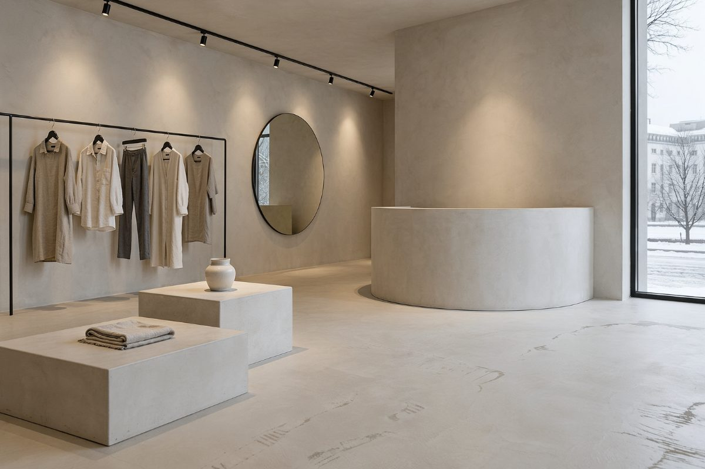
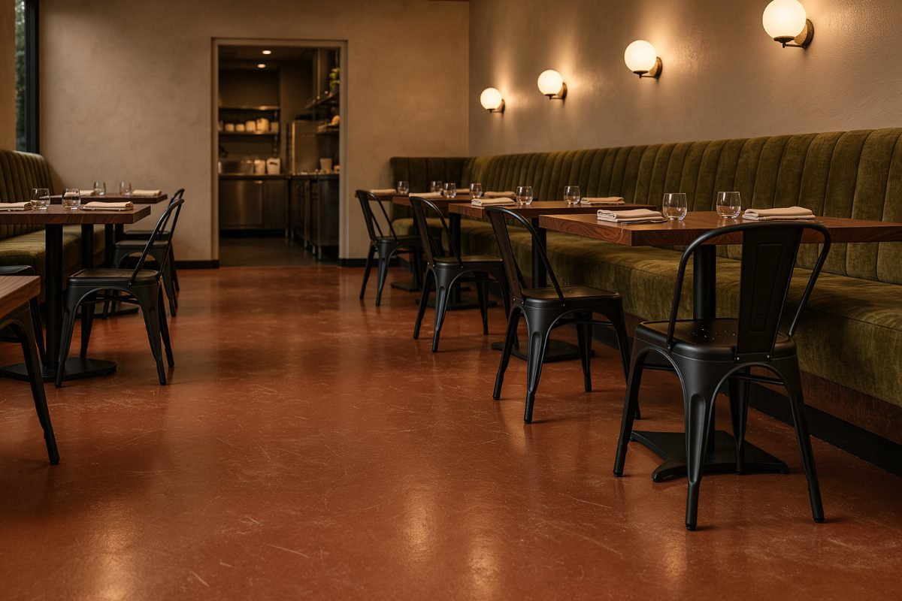
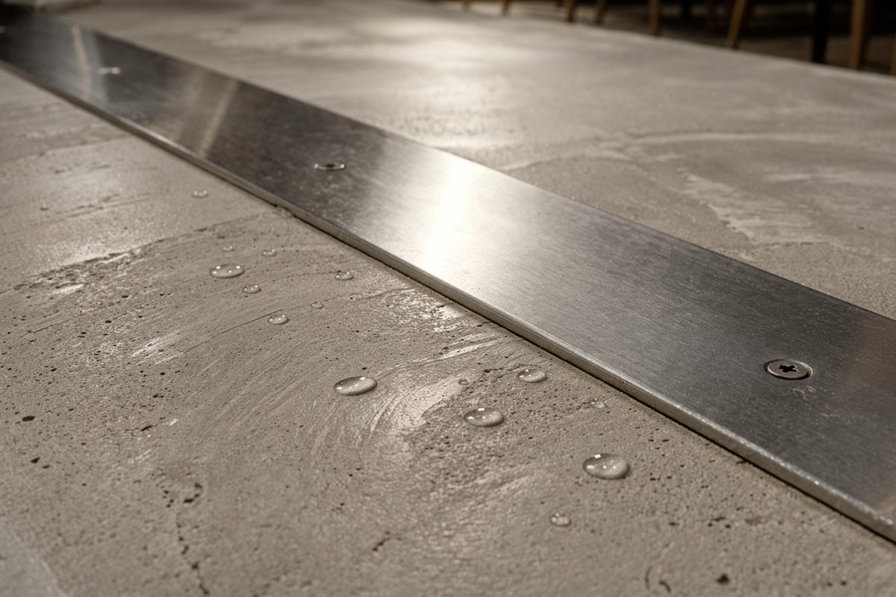

Walk into the busiest new cafés and restaurants on Ossington, Dundas West or in Port Credit and look down. The tile is gone. So is the glossy grey epoxy that makes a dining room feel like a parking garage. What you see instead is one continuous, matte, mineral surface running across the floor, up the bar front and onto the feature wall. That is commercial microcement, and in 2026 it is the finish Toronto owners and designers keep asking us about.
Here is what most contractors will not tell you: microcement is not right for every square foot of a restaurant. It is outstanding in the dining room, at the bar, in customer washrooms and in retail. It is the wrong call on a hot cooking line. This post gives you real 2026 GTA pricing, where it belongs, where it does not, and how to get it installed without closing your doors for a month.
Why Toronto Restaurants and Retailers Are Choosing Commercial Microcement
No grout to fail. In a commercial space, grout is the weak point. It stains, it cracks under rolling carts, and it traps exactly what a health inspector does not want to see. A seamless microcement floor has no joints for dirt to live in. One mop, one pass.
It goes over what you already have. Most commercial units come with old tile, sealed concrete or VCT. Microcement is applied at roughly 2 to 3 mm over sound, prepared substrates, so you skip the jackhammer, the dumpster and most of the dust. For a lease where every closed day costs money, that matters more than anything else on this list.
It photographs like a design-magazine space. Your room is your marketing. Soft trowel movement, warm mineral colour and no visual grid behind every plate on Instagram. Designers can carry one colour from the floor straight up a curved bar or a banquette base, something tile simply cannot do.
It is thin and light. On upper-floor units, condo-podium retail and older Toronto main-street buildings, adding a thick screed or heavy porcelain is not always an option. A thin overlay keeps door clearances and transitions simple.

“In a commercial space, grout is where the dirt lives and where the floor fails first. Take the grout out and you take the problem out.”
Commercial Microcement Cost in Toronto (2026)
Commercial pricing follows the same logic as residential, with two differences: a heavier-duty sealer system for traffic and spills, and scheduling around your business hours. These are typical GTA ranges for finishing over sound existing substrates:
| Scope | Installed Cost (GTA, 2026) | Typical Timeline |
|---|---|---|
| Front-of-house floor, per sq ft (commercial sealer) | $22 – $32 / sq ft | — |
| Café or small dining room floor (500–900 sq ft) | $12,000 – $26,000 | 5 – 8 days |
| Bar front or service counter cladding | $2,500 – $6,500 | 3 – 4 days |
| Feature wall, per sq ft | $15 – $25 / sq ft | 2 – 4 days |
| Customer washroom, walls and floor | $4,500 – $8,500 | 4 – 6 days |
What pushes a quote up: failing or hollow tile that has to come out first, moisture in a slab-on-grade floor, lots of curves and edges, and after-hours or weekend-only work. What brings it down: one colour, open floor area, and a space that can close for a few consecutive days. For context, tearing out and re-tiling a 700 sq ft dining room in Toronto, with demolition, disposal, levelling and commercial porcelain, commonly lands well above the microcement range and takes longer.
Where Commercial Microcement Works, and Where It Does Not
- Dining rooms and cafés: yes. Foot traffic, chairs, coffee and wine spills are exactly what a properly sealed system is built for.
- Bars and service counters: yes. Bar fronts, counter faces and banquette bases take the most kicks and scuffs in the room, and a seamless finish is easy to touch up.
- Customer washrooms: yes. Over a waterproofing membrane, it gives you a grout-free washroom that cleans in minutes and looks far more expensive than it is.
- Retail, salons and showrooms: yes. Clean, gallery-like backdrop for product, with floors that flow into plinths and displays.
- The hot line, dish pit and walk-in cooler: no. Constant hot oil, boiling water, steam cleaning and heavy carts belong on a urethane cement or similar heavy-duty kitchen floor system.

We turn down back-of-house kitchen floors for microcement, and you should be wary of anyone who says yes without hesitation. A commercial kitchen floor sees thermal shock, degreasers and standing water every single night. The smart setup we recommend to Toronto owners is a heavy-duty kitchen floor system in back, with microcement in the dining room, bar and washrooms where guests actually look. You get the design where it pays off and the durability where it is needed. Also confirm your plans with your landlord and the City before work starts if anything structural, plumbing or drainage is changing.
Can a Microcement Floor Handle Commercial Traffic?
Yes, when it is specified for commercial use. The microcement itself is a thin, hard cement-and-polymer layer. The sealer is what takes the daily abuse, so this is where cheap jobs cut corners. For a restaurant or store we use a multi-coat, two-component polyurethane topcoat in a matte or satin sheen, not a single coat of residential sealer.
- Felt or nylon glides on every chair. Bare metal chair legs are the number one cause of scratches on any commercial floor.
- Walk-off mats at the entrance. In a Toronto winter, road salt and grit come in on every boot. Trap them at the door.
- pH-neutral cleaner only. Harsh degreasers and bleach in the mop bucket strip sealer over time.
- A maintenance topcoat every 2 to 3 years. In high-traffic areas a fresh sealer coat restores the surface without redoing the floor. Plan it for a slow week.
- Choose a colour with movement. Mid-tone warm greys, sand, clay and taupe hide daily wear far better than near-white or flat black.

How a Commercial Microcement Install Works Without Shutting You Down
1. Site visit and moisture check. We look at the existing floor, test for moisture in slabs and find hollow or loose tile before anything is quoted.
2. Phasing plan. Dining room one week, washrooms the next, or the whole space during a planned closure. Many GTA restaurants book this work in January and February, when the post-holiday slowdown makes a short closure hurt the least.
3. Prep and reinforcement. Grinding, repairs, primer and mesh reinforcement over joints and transitions so old tile lines do not telegraph through.
4. Microcement coats. Base and finish coats are hand-troweled, sanded and inspected between layers.
5. Commercial sealer and cure. Multi-coat polyurethane sealer, then light foot traffic within roughly 24 to 48 hours and full service after the sealer cures, usually within a week.
Commercial Microcement Across Toronto and the GTA
Artisan Coat finishes floors, bars, feature walls and washrooms for restaurants, cafés, salons and retail units across Toronto, Mississauga, Brampton, Vaughan, Oakville, Etobicoke, North York, Scarborough, Richmond Hill, Markham, Burlington and the wider GTA. One crew handles prep, finish and sealer, backed by 20+ years of surface work and a 3-year written warranty.
The Short Version
Commercial microcement gives a Toronto restaurant, café or store a seamless, grout-free, design-forward surface without the demolition and downtime of re-tiling. Expect roughly $22–$32 per sq ft for front-of-house floors with a commercial sealer, $2,500–$6,500 for a bar front, and $4,500–$8,500 for a customer washroom.
Use it in the dining room, at the bar, in washrooms and in retail. Keep the hot line on a heavy-duty kitchen system. Specify a real commercial sealer, put glides on the chairs, mats at the door, and book your install in the slow season. Do that and your floor becomes part of the reason people come back.